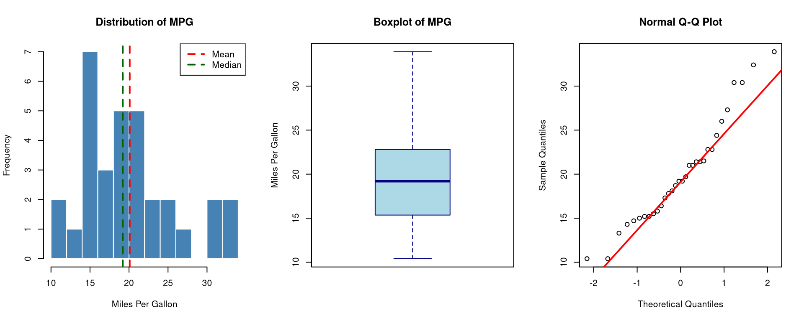

Basic statistics is the foundation of all data analysis. It provides tools to summarize, describe, and understand data before performing any advanced modelling. It answers the most fundamental question: What does the data look like?
Key Concepts and Definitions
1. Population vs Sample
Population: The complete set of all items of interest (e.g., all students in India).
Sample: A subset of the population selected for study (e.g., 500 students from Delhi).
We use sample statistics to estimate population parameters.
Measure
Population Symbol
Sample Symbol
Mean
μ (mu)
x̄
Standard Deviation
σ (sigma)
s
Size
N
n
2. Measures of Central Tendency
These describe the centre of the data.
Mean (Arithmetic Average)
\[\bar{x} = \frac{\sum_{i=1}^{n} x_i}{n}\]
Median
The middle value when data is sorted. For \(n\) observations:
If \(n\) is odd: Median = \(\left(\frac{n+1}{2}\right)\)th value
If \(n\) is even: Median = average of \(\left(\frac{n}{2}\right)\)th and \(\left(\frac{n}{2}+1\right)\)th values
Mode
The value that occurs most frequently in the dataset.
Real-world examples: - A hospital computes the mean age of patients to plan resources. - An economist uses the median income (not mean) because income data is right-skewed. - A teacher computes standard deviation of marks to judge class variability.
Implementation in R
Loading and Exploring Data
# Use the built-in 'mtcars' datasetdata(mtcars)# First look at the datahead(mtcars)
Statistic Value
1 N 32.000
2 Mean 20.091
3 Median 19.200
4 SD 6.027
5 Variance 36.324
6 Min 10.400
7 Max 33.900
8 Range 23.500
9 IQR 7.375
10 Skewness 0.611
11 Kurtosis -0.373
Visualisation
par(mfrow =c(1, 3))# Histogramhist(x,main ="Distribution of MPG",xlab ="Miles Per Gallon",col ="steelblue", border ="white",breaks =10)abline(v =mean(x), col ="red", lwd =2, lty =2)abline(v =median(x), col ="darkgreen", lwd =2, lty =2)legend("topright", legend =c("Mean", "Median"),col =c("red", "darkgreen"), lty =2, lwd =2)# Boxplotboxplot(x,main ="Boxplot of MPG",ylab ="Miles Per Gallon",col ="lightblue", border ="navy")# QQ Plot (normality check)qqnorm(x, main ="Normal Q-Q Plot")qqline(x, col ="red", lwd =2)

Interpretation
Looking at the MPG data from mtcars:
The mean MPG (~20.09) is slightly higher than the median (~19.2), suggesting a mild right skew.
The standard deviation (~6.03) tells us most cars fall within ±6 MPG of the mean.
The IQR spans from ~15.4 to ~22.8 MPG, covering the middle 50% of cars.
The Q-Q plot helps assess if the data follows a normal distribution.
Summary
Basic statistics transforms raw numbers into meaningful insights. Always start any data analysis by computing and visualising these descriptive measures — they guide every decision that follows.